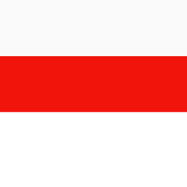
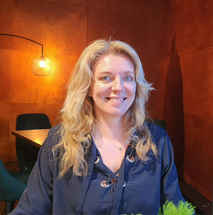

PL
EN
DE

Posłuchaj, jak działamy, i umów bezpłatną rozmowę — o wybranej godzinie zadzwonimy do Ciebie.
Fundacja skupia zespół doświadczonych specjalistów i profesjonalistów, którzy od wielu lat niosą innym wsparcie i dzielą się zdobytą wiedzą.
Twoje zaangażowanie również ma moc sprawczą! Każdy gest wsparcia - finansowy, czasowy czy merytoryczny - to cegiełka w budowaniu systemu pomocy, który nie zostawia nikogo samego.
Projekt SPOT to kompleksowy program przeciwdziałania cyfrowym uzależnieniom, wykluczeniu i przemocy w szkołach. Łączy neuroedukację, integrację społeczną oraz wsparcie prawne nauczycieli, by stworzyć bezpieczne środowisko rozwoju dla młodzieży. Dowiedz się, jak innowacyjne narzędzia i warsztaty dla uczniów, rodziców i pedagogów zmieniają polską edukację!
Samotne rodzicielstwo to wyzwanie, ale nie musisz przez to przechodzić sam.
Nasz program pomaga w budowaniu dobrych relacji z dzieckiem i przełamywaniu toksycznych schematów alienacji.
Walczymy z systemem, który:
🛑 Narzuca sztuczne "godziny kontaktów" zamiast naturalnych relacji dziecka z rodzicem
🛑 Utrudnia uzyskanie opieki na równych warunkach dla obojga rodziców
🛑 Pozwala na izolowanie dziecka od kochającego rodzica
Oferujemy:
✅ Pomoc prawną w podważaniu krzywdzących opinii OZSS i walce o sprawiedliwe kontakty
✅ Terapię psychologiczną – radzenie sobie z traumą rozstania, nauka komunikacji z drugim rodzicem
✅ Warsztaty wychowawcze – jak budować więź mimo ograniczonego kontaktu
Nie pozwól, by patologiczne mechanizmy okradały Twoje dziecko z prawa do obojga rodziców!
W odpowiedzi na narastające problemy zdrowotne młodego pokolenia – od wad postawy po cyberprzemoc – stworzyliśmy interaktywny projekt edukacyjny. W trakcie 60-minutowych sesji w szkołach całej Europy prezentujemy technologie, które aktywnie chronią rozwój fizyczny i psychiczny uczniów, zamiast go niszczyć.
Prowadzimy konsultacje indywidualne, terapie grupowe oraz programy wsparcia dedykowane poszczególnym grupom.
Z naszej pomocy mogą skorzystać:
✅ osoby w kryzysie emocjonalnym i w trudnych sytuacjach życiowych
✅ rodzice i dzieci przeżywające rozstanie lub konflikt w rodzinie
✅ młodzież zmagająca się ze stresem, wykluczeniem i cyfrowymi uzależnieniami
Rozmowa ze specjalistą to pierwszy krok – umów spotkanie z naszym konsultantem.
Dziękujemy, że jesteś z nami.
Nawet symboliczna wpłata niesie realną pomoc.
Wybierz dowolną formę wsparcia z poniższych opcji.
Możesz wpłacić dowolny datek na podane konto Fundacji:
Przelew tradycyjny:
PKO BP
Konto:
30 1020 2791 0000 7502 0413 2981
Adres:
WorldFoundation
ul. Staromiejska 17e, 84-300 Lębork
lub skorzystać z poniższych szablonów.

Prezes Fundacji

Współzałożycielka fundacji

Kancelaria Prawna